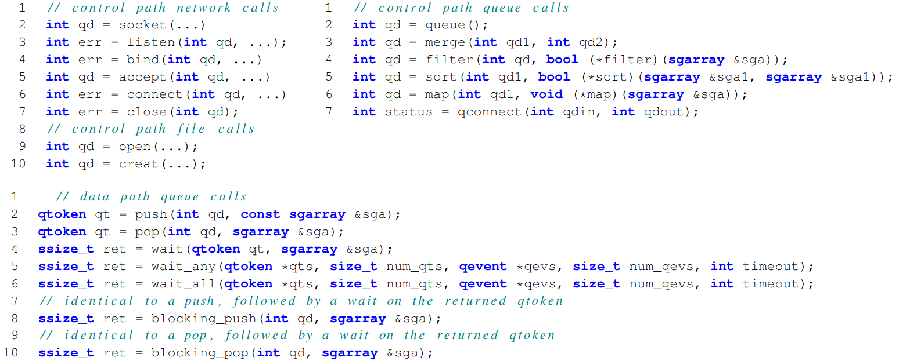
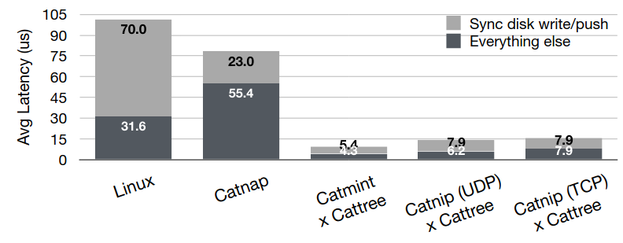

# Demikernel <div class="center"> **Gabe Parmer** © Gabe Parmer, 2025, All rights reserved </div> --- ## Simple Application Get 1. receive request 2. access blob on disk/cache 3. send data reply Update 1. receive blob update 2. commit to disk 3. send confirmation --- ## OS Overheads 1. Network interrupt 2. Device driver buffer mgmt 3. Socket management/allocation 4. Network protocol 5. VFS read/write 6. Data copies 7. SSD interrupt 3x system calls, 2x interrupts --- ## Demikernel API - Concurrency - Zero-copy - *Direct I/O access* --- ## Bypass I/O Data-Plane Development Kit (DPDK) - Network driver *at user-level* - Directly talk to the device at user-level $\to$ No kernel transitions/overheads Polling on network device $\to$ No interrupts ---  --- ## Network Echo <img src="resources/demikernel_echo.png" width="110%"> --- ## Echo + Logging  --- ## DMA Ring buffer for DMA - Pointers to "free memory" usually 1400 bytes - When a packet arrives on NIC, it transfers into the first of these - Update the ring to record that data is available Demikernel: - Poll on the ring buffer! - The networking device below will populate through DMA --- ## Scatter-Gather Network packets arrive in arbitrary order - for different requests - in DMA chunks of memory (1400 bytes, scattered around) But I want to process on a long, contiguous message! - Too bad :scull_and_crossbones: - Allocate and `memcpy` if you want it so bad 🤷 --- ## Threads Not really! - Coroutines with polling, processing queues --- ```c++ [18|24-34|50-65] // Copyright (c) Microsoft Corporation. // Licensed under the MIT license. #ifndef DMTR_LIBOS_USER_THREAD_HH_IS_INCLUDED #define DMTR_LIBOS_USER_THREAD_HH_IS_INCLUDED #include <boost/coroutine2/coroutine.hpp> #include <functional> #include <queue> namespace dmtr { template <typename Value> class user_thread { public: typedef std::queue<Value> queue_type; public: typedef boost::coroutines2::coroutine<void> coroutine_type; public: typedef coroutine_type::push_type yield_type; public: typedef std::function<int (yield_type &, queue_type &)> function_type; private: int my_error; private: std::unique_ptr<queue_type> my_queue; private: std::unique_ptr<coroutine_type::pull_type> my_coroutine; public: user_thread(function_type fun) : my_error(EAGAIN), my_queue(new queue_type) { my_coroutine.reset(new coroutine_type::pull_type([=](yield_type &yield) { my_error = fun(yield, *my_queue); if (EAGAIN == my_error) { DMTR_PANIC("User thread function may not return `EAGAIN`."); } })); } private: user_thread(const user_thread &) = delete; public: user_thread(user_thread &&other) : my_error(other.error), my_coroutine(std::move(other.my_coroutine)), my_queue(std::move(other.my_queue)) { other.my_error = EAGAIN; } public: bool done() const { return !(bool)*my_coroutine; } public: void enqueue(const Value &value) { my_queue->push(value); } public: int service() { if (!done()) { (*my_coroutine)(); } if (!done()) { return EAGAIN; } DMTR_TRUE(ENOTSUP, my_error != EAGAIN); return my_error; } }; } //namespace dmtr #endif /* DMTR_LIBOS_USER_THREAD_HH_IS_INCLUDED */ ``` --- ## Event Notification Polling, through and through! - But control which queue you poll on - `dmtr_wait`, `dmtr_wait_any` --- ```c++ [12-19|21-42|45-50] // Copyright (c) Microsoft Corporation. // Licensed under the MIT license. #include <dmtr/wait.h> #include <boost/chrono.hpp> #include <cerrno> #include <dmtr/annot.h> #include <dmtr/fail.h> #include <dmtr/libos.h> int dmtr_wait(dmtr_qresult_t *qr_out, dmtr_qtoken_t qt) { int ret = EAGAIN; while (EAGAIN == ret) { ret = dmtr_poll(qr_out, qt); } DMTR_OK(dmtr_drop(qt)); return ret; } int dmtr_wait_any(dmtr_qresult_t *qr_out, int *ready_offset, dmtr_qtoken_t qts[], int num_qts) { // start where we last left off int i = (ready_offset != NULL && *ready_offset + 1 < num_qts) ? *ready_offset + 1 : 0; while (1) { // just ignore zero tokens if (qts[i] != 0) { int ret = dmtr_poll(qr_out, qts[i]); if (ret != EAGAIN) { if (ret == 0) { DMTR_OK(dmtr_drop(qts[i])); if (ready_offset != NULL) *ready_offset = i; return ret; } } } i++; if (i == num_qts) i = 0; } DMTR_UNREACHABLE(); } /* from libos/lwip/lwip_libos.cc */ int dmtr_poll(dmtr_qresult_t *qr_out, dmtr_qtoken_t qt) { DMTR_NOTNULL(EINVAL, ioq_api.get()); return ioq_api->poll(qr_out, qt); } ```